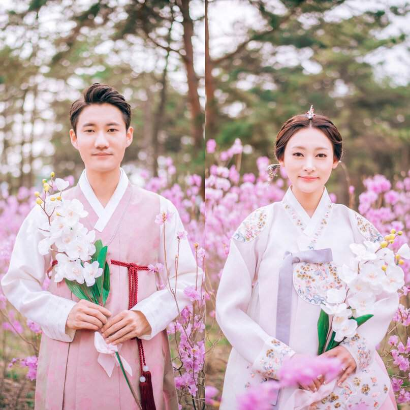
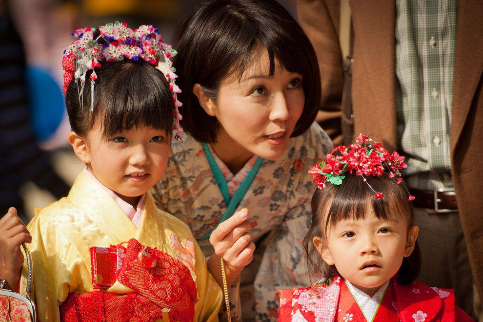

В стране издревле сохранилось огромное количество ритуалов, обычаев, которые соблюдаются народом в наши дни. Это касается практически всех сфер жизни. О традициях Японии кратко сказать сложно, поскольку их очень много. Неизменными со средневековья остаются:
Японцы бережно и с большой любовью относятся к окружающей природе, восхищаются ее естественностью, погодными явлениями, цветами и морем.
Женщины в Японии работают обычно только до замужества. Выйдя замуж, японки занимаются в основном семьей. Хотя по закону у женщин в Японии те же права, что и у мужчин, в семейной жизни все еще сохраняются старые патриархальные порядки. Поэтому совмещать работу и семейный быт - сложно.
До сих пор многие молодые люди вступают в брак не по любви, а по предварительному сговору родителей и/или при содействии свата. Брак по расчету - нормальное явление для Японии. Влюбленность считается временным явлением, которое нужно пережить.
В Японии в каждом ребенке с детства воспитывают сдержанность, обязательность и аккуратность. С малышами обращаются мягко, их никогда не наказывают, дают большую свободу. Однако при этом с малых лет мальчикам и девочкам прививают правила этикета. Ни одна шалость или небрежность не остается без внимания или молчаливого порицания.
Благодаря такому воспитанию дети вырастают сдержанными и дисциплинированными. В школу в Японии идут с шести лет, но уже в этом возрасте ребята достаточно собранные и организованные. Учителям не приходится бороться за дисциплину в классах
Среди необычных традиций Японии стоит выделить наиболее интересные. К ним относятся:
1.Новый год на рассвете. Население страны не встречает Новый год так, как это делают европейцы или американцы. В новогоднюю ночь люди ложатся спать, а утром начинают встречать всей семьей рассвет.
2.Не говорят слово »нет». В народе не принято отказывать человеку и произносить слово нет. Его заменяют другой вежливой фразой, стараются отойти от темы, чтобы не обидеть человека.
3.Момент вежливости. У японцев не принято пожимать руки друг другу при встрече. Вместо этого люди кланяются.
4.Транспортные курьезы. В метро работают специалисты, которых называют запихивателями. Они заталкивают людей и утрамбовывают их в вагоны.
5.Странности школьников. Девочкам не разрешается общаться с мальчиками до определенного возраста. Школьники не должны ходить в одиночку. Это считается аморальным поступком.
6.Страх близнецов. В древности при рождении близнецов одного из них называли сыном демона. Поэтому на всякий случай избавлялись от обоих детей, а также их матери.
7.Правила антиэтикета. Во время приема пищи нужно чмокать, чавкать, но нельзя передвигать посуду, поедать надкушенные куски пирожного, протыкать палочками еду, а также пользоваться ложкой, наливать самому себе обед.